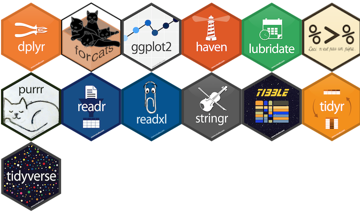

KW43 - Import und Datenvorverarbeitung - Übung
Biodiversity & Ecosystems (S)
Aufgabe 1: Zähldaten
Die Projektstruktur steht. Nun können die Daten eingelesen und die nötigen Datentypen definiert werden. Das tidyverse-Universum (u.a. pipes, ggplot usw.) ist in unseren Auswertungen zentral.
Die Zähldaten des Wildnispark Zürich wurden vorgängig bereinigt (z.B. wurden Stundenwerte entfernt, an denen am Zähler Wartungsarbeiten stattgefunden haben). Das macht es für uns einfach, denn wir können die Daten ohne vorgängige Bereinigung einlesen. Behaltet aber im Hinterkopf, dass die Datenaufbereitung, die Datenbereinigung mit viel Aufwand verbunden ist.
- Lest die Zählaten ein, speichert ihn unter der Variable depo und sichtet den Datensatz (z.B. str(), head(), view() usw.).
depo <- read_csv("./HIER RELATIVEN DATEIPFAD EINGEBEN")
# Speicherort sowie Dateiname anpassenHinweis: Im Stundenformat zeigen die Werte bei 11:00 die Zähldaten zwischen 11:00 bis 12:00 Uhr.
1a)
Im Datensatz des Wildnisparks sind Datum und Uhrzeit in einer Spalte. Diese müssen getrennt werden (Ich schlage hier den Ansatz des piping ( %>% ) vor. Damit können in einem “Rutsch” mehrere Operationen ausgeführt werden).
Ebenfalls muss das Datum als solches definiert werden. Welches Format hat es (im Code: format = “HIER DATUMSFORMAT”)?
Schliesslich schneiden wir den Datensatz auf die Untersuchungsdauer zu.
str(depo)
depo <- depo %>%
mutate(Datum_Uhrzeit = as.character(DatumUhrzeit)) %>%
separate(Datum_Uhrzeit, into = c("Datum", "Zeit"), sep = " ")%>% # mit seperate() trennt man
# 1 Spalte in 2.
mutate(Datum = as.Date(Datum, format = "HIER DATUMSFORMAT")) %>% # hier wird Text zum Datum
# Schneide das df auf den gewünschten Zeitraum zu
filter(Datum >= depo_start, Datum <= depo_end) # das Komma hat die gleiche Funktion wie ein &1b)
Ihr könnt selbst wählen, ob ihr Fussgänger:innen oder Velos untersuchen wollt (je nachdem ob sie in eurem Datensatz vorhanden sind).
- Entfernt die überflüssigen Spalten aus dem Datensatz.
1c)
- Berechnen des Totals (IN + OUT), da dieses in den Daten nicht vorhanden ist (wiederum mit piping).
Tipp: Wenn man R sagt: “addiere mir Spalte x mit Spalte y”, dann macht R das für alle Zeilen in diesen zwei Spalten. Wenn man nun noch sagt: “speichere mir das Ergebnis dieser Addition in einer neuen Spalte namens Total”, dann hat man die Aufgabe bereits gelöst. Arbeitet mit mutate()).
- Entfernt nun alle NA-Werte mit na.omit().
Aufgabe 2: Meteodaten
2a)
- Lest die Meteodaten ein und speichert sie unter meteo.
2b)
- Auch hier müssen die Datentypen manuell gesetzt werden.
Tipp: Das Datum wird als Integer erkannt. Zuerst muss es in Text umgewandelt werden aus dem dann das eigentliche Datum herausgelesen werden kann. Das ist mühsam - darum hier der Code.
meteo <- transform(meteo, time = as.Date(as.character(time), "%Y%m%d"))Hinweis Was ist eigentlich Niederschlag:
https://www.meteoschweiz.admin.ch/home/wetter/wetterbegriffe/niederschlag.html
Werden den anderen Spalten die richtigen Typen zugewiesen? Falls nicht, ändert die Datentypen.
Nun schneiden wir den Datensatz auf die Untersuchungsdauer zu.
2c)
- Jetzt müssen auch hier alle nicht verfügbare Werte (NA’s) herausgefiltert werden.
Tipp: Entweder geht das mit na.omit() für alle Spalten oder, etwas konservativer, können mit filter() die zu filternden Spalten definiert werden. Mit folgendem Codeblock können z.B. alle Werte gefiltert werden, die in der Spalte stn nicht gleich NA sind (es werden also die Werte behalten, die vorhanden sind). Der Code muss für die anderen relevanten Spalten noch ergänzt werden.
meteo <- meteo %>%
filter(!is.na(stn))%>%
...%>%
...Hinweis: … steht im Code für folgende oder vorhergehende Zeilen im Code (in einer Pipe)
- Prüft nun, wie die Struktur des data.frame (df) aussieht und ob alle NA Werte entfernt wurden (sum(is.na(df$Variable))). Stimmen alle Datentypen?
Aufgabe 3: Datenvorverarbeitung (Mutationen)
3a)
Jetzt fügen wir viele Convinience Variabeln hinzu. Wir brauchen:
- Wochentag; der Befehl dazu ist weekdays()
Tipp: R sortiert die Levels alphabetisch. Da das in unserem Fall aber sehr unpraktisch ist, müssen die Levels manuell bestimmt werden
...
mutate(Wochentag = base::factor(Wochentag,
levels = c("Montag", "Dienstag", "Mittwoch",
"Donnerstag", "Freitag", "Samstag", "Sonntag")))
...Frage: Was bedeutet base:: vor den eigentlichen Befehl?
- Ist es ein Werktag oder Wochenende?
...
mutate(Wochenende = if_else(Wochentag == "Montag" | Wochentag == "Dienstag" |
Wochentag == "Mittwoch" | Wochentag == "Donnerstag" |
Wochentag == "Freitag", "Werktag", "Wochenende"))
...Frage: Was bedeuten die | (zu erstellen mit AltGr + 7)? Welches ist das if Argument, welches das else?
Kalenderwoche: week()
Monat: month()
Jahr: year()
Phase Covid (Code untenstehend)
Hinweis I: ich mache den letzten Punkt nachgelagert, da zu viele Operationen in einem Schritt auch schon mal etwas durcheinander erzeugen können. Hinweis II: Wir packen alle Phasen (normal, die beiden Lockdowns und Covid aber ohne Lockdown) in eine Spalte –> long-format ist schöner (und praktischer für das plotten) als wide-format.
depo <- depo %>%
mutate(Phase = if_else(Datum >= lock_1_start_2020 & Datum <= lock_1_end_2020,
"Lockdown_1",
if_else(Datum >= lock_2_start_2021 & Datum <= lock_2_end_2021,
"Lockdown_2",
if_else(Datum < lock_1_start_2020,
"Normal", "Covid"))))
# hat das gepklappt?!
unique(depo$Phase)Frage: Welches ist das if Argument, welches das else?
- Ändert die Datentypen der Spalten Wochenende, KW, Phase zu factor und sortiert die Levels, so dass diese Sinn machen (z.B. in Phase = Normal, Lockdown 1, Lockdown 2, Covid).
3b)
- Nun soll noch die volle Stunde als Integer im Datensatz stehen. Diese Angabe muss etwas mühsam aus den Daten gezogen werden (darum hier der fertige Code dazu):
depo$Stunde <- as.numeric(format(as.POSIXct(depo$Zeit,format="%H:%M"),"%H"))3c)
Die Daten wurden durch den WPZ kalibriert (Kommastellen).
Rundet sie auf 0 Nachkommastellen (Ganzzahl; unser Modell kann nicht mit Kommazahlen in der ahbängigen Variable umgehen).
Definiert sie sicherheitshalber als Integer
Macht das für IN, OUT und Total.
depo$... <- round(..., digits = 0)
depo$... <- as.integer(...)Aufgabe 4: Aggregierung der Stundendaten
4a)
Unsere Daten liegen im Stundenformat vor. Für einige Auswertungen müssen wir aber auf ganze Tage zurückgreifen können.
- Die Stundendaten müssen zu ganzen Tagen aggregiert werden. Macht das wiederum einer Pipe Bezieht folgende Gruppierungen (group_by()) mit ein: Datum, Wochentag, Wochenende, KW, Monat, Jahr, Phase. Summiert die Zählmengen separat (Total, IN, OUT) auf und speichert das Resultat unter depo_d.
Tipp: Wenn man die Convinience Variablen als grouping variable einspeisst, dann werden sie in das neue df übernommen und müssen nicht nochmals hinzugefügt werden
depo_d <- depo %>%
group_by(VARIABLE1, VARIABLE2, ...) %>% # Gruppieren nach den Variablen
summarise(Total = sum(Fuss_IN + Fuss_OUT),# Berechnen der gewünschten Werte
Fuss_IN = sum(Fuss_IN),
...4b)
- Aggregiere die Stundenwerte nach dem Monat (Gruppierungen Monat, Jahr) und speichert das neue df unter depo_m.
Tipp: Braucht wiederum group_by() und summarise(). Nun brauchen wir nur noch das Total, keine Richtungstrennung mehr.
- Fügt den neu erstellten df eine Spalte mit Jahr + Monat hinzu. Das ist etwas mühsam, darum hier der fertige Code dazu:
# vergewissere, dass sicher df
depo_m <- as.data.frame(depo_m)
# sortiere das df anhand zwei Spalten aufsteigend (damit die Reihenfolge sicher stimmt)
depo_m[with(depo_m, order(Jahr, Monat)),]
depo_m <- depo_m %>%
mutate(Jahr = as.factor(Jahr)) %>% # mache dann aus Jahr und Monat Faktoren
mutate(Monat = as.factor(Monat)) %>%
mutate(Ym = paste(Jahr, Monat)) %>% # und mache eine neue Spalte, in der Jahr und Monat in zusammen sind
mutate(Ym= factor(Ym, levels=unique(Ym))) # auch dass soll ein Faktor sein,
# die Levels sind die einzelnen Einträge in der Spalte (welche ja bereits geordnet sind)4c)
Macht euch mit den Daten vertraut. Plottet sie, seht euch die df’s an, versteht, was sie repräsentieren.
Z.B. sind folgende Befehle und Plots wichtig:
str()
summarize()
head()
Scatterplot, x = Datum, y = Anzahl pro Zeiteinheit
Histrogram
usw.
Hinweis: Geht noch nicht zu weit mit euren Plots. Die Idee ist, dass man sich einen Überblick über die Daten verschafft und noch keine “analysierenden” Plots erstellt.
–> Erklärt dem Plenum am 26.10.2021 was ihr gemacht habt, was eure Daten zeigen und präsentiert diese einfachen Plots.
Nachdem nun alle Daten vorbereitet sind folgt im nächsten Schritt die Analyse.